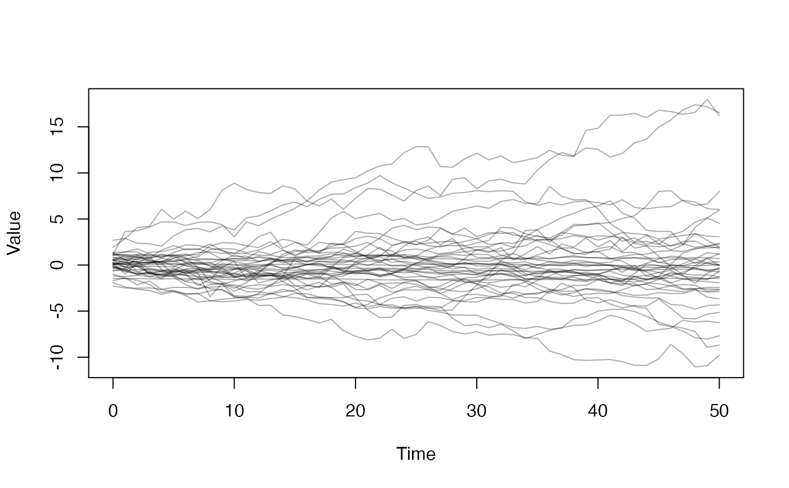

Simulate a dust model. This is a helper function that is subject to change; see Details below.
dust_simulate( model, steps, pars, state, index = NULL, n_threads = 1L, seed = NULL, return_state = FALSE )
| model | A dust model or generator object |
|---|---|
| steps | The vector of steps used to simulate over. The first
step in this vector is the starting step (corresponding to the
initial |
| pars | An unnamed list of model initialisation pars (see
dust). It must have the same length as the number of columns
in |
| state | A matrix of initial states. It must have the number
of rows corresponding to the number of initial state values your
model requires, and the number of columns corresponding to the
number of independent simulations to perform (i.e.,
|
| index | An optional index, indicating the indicies of the state vectors that you want output recorded for. |
| n_threads | Number of OMP threads to use, if |
| seed | The seed to use for the random number generator. Can
be a positive integer, |
| return_state | Logical, indicating if the final state should
be returned. If |
This function has an interface that we expect to change once multi-parameter "dust" objects are fully supported. For now, it is designed to be used where we want to simulate a number of trajectories given a vector of model parameters and a matrix of initial state. For our immediate use case this is for simulating at the end of an MCMC where want to generate a posterior distribution of trajectories.
This implementation leaves a number of issues that we will
document more fully in future versions. Most pressing is that
the RNG is by defauly uncoupled between a model object and the
simulation; ideally this would update the RNG on the model,
but this needs care in the case where either more or fewer
simulations are carried out than the initial object has. This
is resolvable as rng state can be exported from one dust object
and used in another. The dust_rng_state_long_jump() function
can be used manually to perform a "long jump" on the exported
state, which can be used to create streams that are sensibly
distributed along the RNG's period. If you are performing
multiple simulations with this function you should use
return_state = TRUE and use the rng_state attribute to
reseed the RNG (it holds the final state of the random number
generator at the end of the simulation, so is the correct place
to start again).
# Use the "random walk" example model <- dust::dust_example("walk") # Start with 40 parameter sets; for this model each is list with # an element 'sd' pars <- replicate(40, list(sd = runif(1)), simplify = FALSE) # We also need a matrix of initial states y0 <- matrix(rnorm(40), 1, 40) # Run from steps 0..50 steps <- 0:50 # The simulated output: res <- dust::dust_simulate(model, steps, pars, y0) # The result of the simulation, plotted over time matplot(steps, t(drop(res)), type = "l", col = "#00000055", lty = 1)